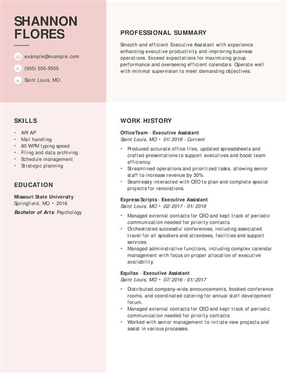
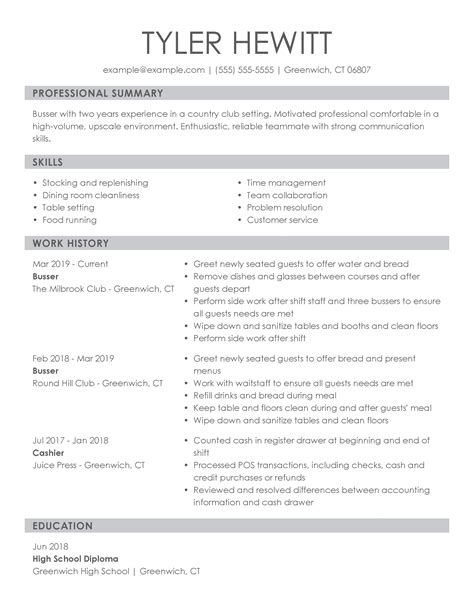
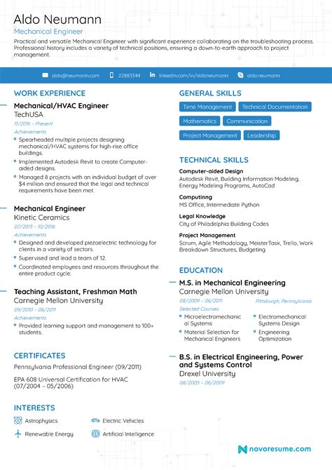

Our online resume maker features design and customization tools with real-time previews available, giving you the ultimate control over the look and feel of your resume



A Free, Quick and Easy Way to Create Your Professional Resume.
✔ 30+ Professional Resume Templates
Choose from over thirty modern and professional templates. All of which can be customized to your liking.
✔ Fast and Easy to Use
Our free resume builder lets you easily and quickly create a resume using our resume wizard.
✔ Robust Text Editor
Our text editor has everything you need to customize your resume. Choose different fonts, sizes, bullets and much more.
✔ Download your resume as PDF
Download your resume and send it straight to the hiring manager. Whatever format you choose, we’ve got you covered.
Easy to Download and Share
Resume Builder makes it easy to download your new resume in five different formats
Download your new resume and easily share it on personal and professional websites, active job boards, and upload to application systems
Resume Resource Center
Need help building your resume? By analyzing thousands of winning resumes, we were able to build guides to help you build the perfect resume for the job you want. We’re adding more and more examples and guides every week in order to have the most comprehensive directory of resume examples. Click below to check out some of our featured resume examples along with tips for making your resume stand out!